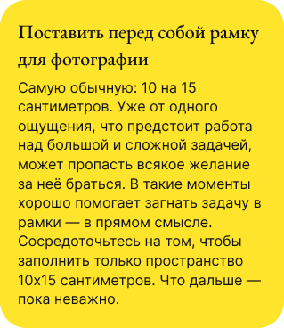

Начинать что-то новое — тяжело и страшно. Даже если это просто небольшой фрагмент кода. Или текст. Например, прежде чем написать здесь что-то вразумительное, автор(ка) этого материала заварила чай, позвонила бабушке узнать, как поживают на даче огурцы с помидорами (окей, это правда важно), 10 минут ходила туда-сюда по комнате, протёрла пыль на столе и заварила чай ещё раз, потому что он остыл. Всё это время с монитора на неё смотрел чистый лист.
Прокрастинировать перед тем, как начать что-то делать (особенно что-то новое) — нормальная реакция мозга. Разберёмся, почему это происходит.
Чаще всего страх чистого листа появляется не из-за чего-то одного, а из-за совокупности нескольких факторов. Вот что может помочь:
